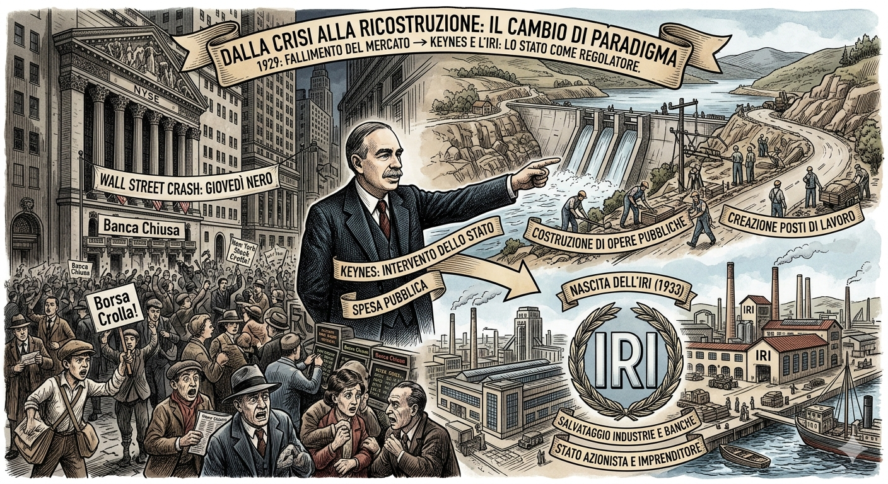
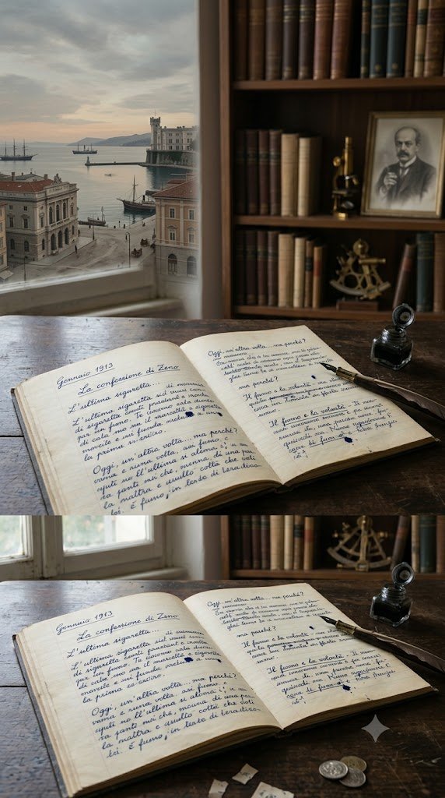
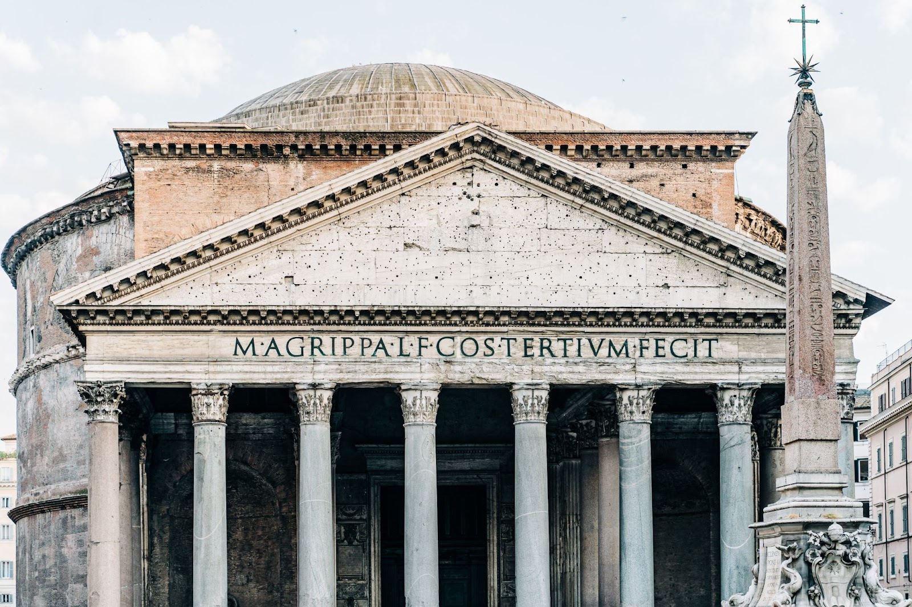

Il programma di studio
Le materie del 5° anno dell'IIS "Marconi Pieralisi" organizzate in area scientifico-tecnica e area umanistica, con i relativi approfondimenti interdisciplinari.
Area Scientifica / Tecnica

Informatica
L'architettura, lo sviluppo frontend e backend e il lavoro in una vera software house.
Sistemi e Reti
Studio dell'architettura di rete, protocolli e algoritmi di crittografia per la cybersecurity.

TPSIT
La programmazione concorrente, la gestione dei Thread in Java e l'ottimizzazione delle risorse della CPU.

GPOI
Modelli economici d'impresa, la grande crisi del 1929, le teorie di Keynes e la nascita dell'IRI.

Matematica
Strumenti matematici avanzati, analisi di funzioni e legami con i modelli di computazione artificiale.
Intelligenza Artificiale
Il legame tra biologia e reti neurali artificiali, dal Percettrone alla Backpropagation.
Area Umanistica & Scienze Motorie

Italiano
Lo studio della psiche umana e della modernità. Un percorso incentrato sull'inettitudine attraverso i capolavori di Italo Svevo.

Storia
I grandi eventi e le trasformazioni politiche, sociali ed economiche del Novecento.

Inglese
Lo studio della letteratura dell'Ottocento, focalizzato sull'opera "Oliver Twist" di Charles Dickens.

Scienze Motorie
Studio dell'anatomia e della fisiologia cardiaca, la doppia circolazione e la compatibilità ematica.

Religione
Riflessioni etiche e bioetiche: il valore della vita e il dibattito sull'interruzione di gravidanza.